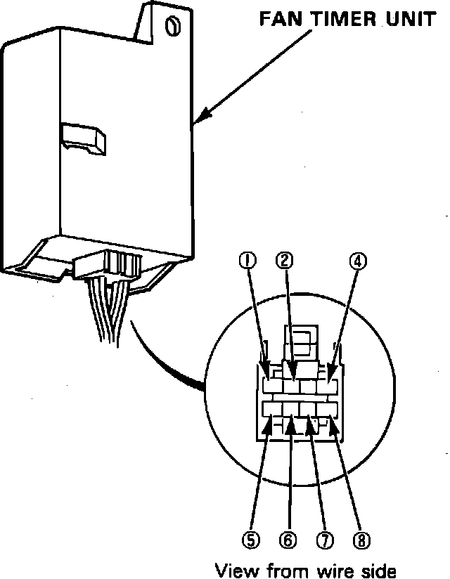

Radiator Cooling Fan Control Module: Testing and Inspection
Fig. 23 Fan Timer Unit Test:

1. Perform tests with fan timer connected and ignition switch On.
2. Refer to Fig. 23. for fan timer terminals.
3. Check for voltage between terminal 4 and body ground, one volt or less should be indicated, if not as indicated, repair open to body ground.
4. Check terminal No. 6 for battery voltage, voltage should be indicated, if not check fuse 20, if ok, repair open in white wire.
5. Check terminal No. 7 for battery voltage with ignition switch On, voltage should be indicated, if not check fuse 24, if ok, repair open in BLK/YEL wire.
6. Check terminal No. 4 for battery voltage with ignition switch On, voltage should be indicated, if not check fuse 21, if ok, repair open in YEL/BLK wire.
7. Check terminal No. 1 for battery voltage, voltage should be indicated, if not replace fan timer unit, before connecting new timer check continuity between YEL/WHT wire and ground. If continuity is indicated, do not connect new timer as damage will occur.
8. Connect terminal No. 6 to body ground, condenser fan relay should come on, if not check for open in BLU/RED between fan timer and condenser fan relay, if ok, check for open between YEL/WHT and BLK/YEL wires, if ok, test condenser fan.
9. Check terminal No. 5 for battery voltage, with oil temperature below 108°C, about 11 volts should be indicated, if not, faulty oil temperature switch, short to body ground or faulty fan timer unit are indicated.